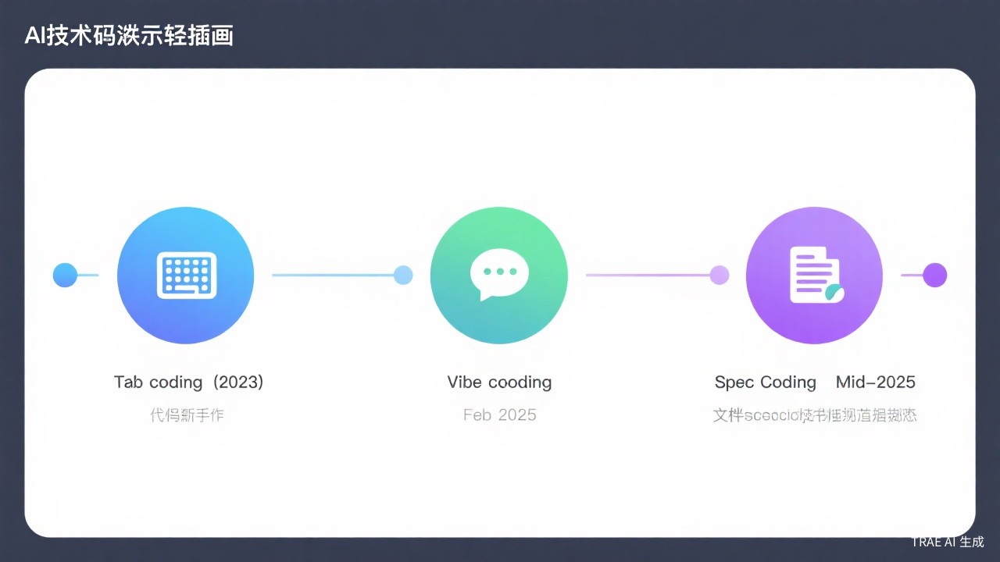
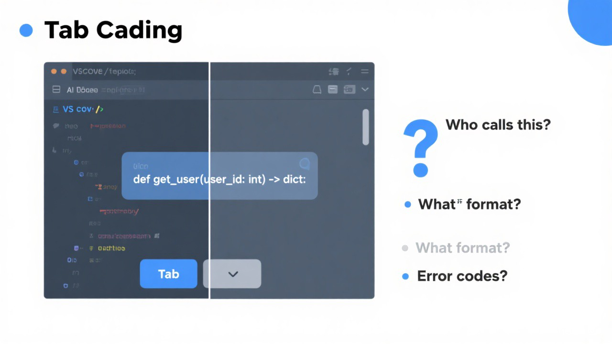
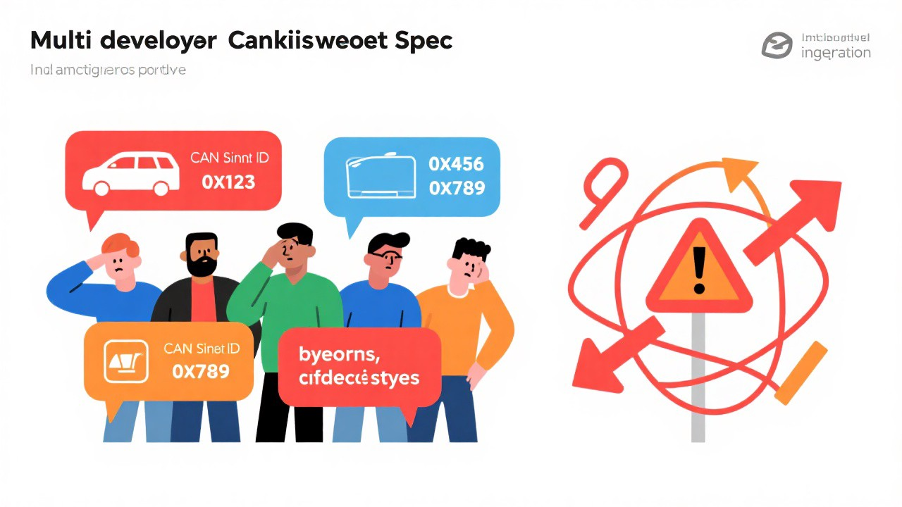
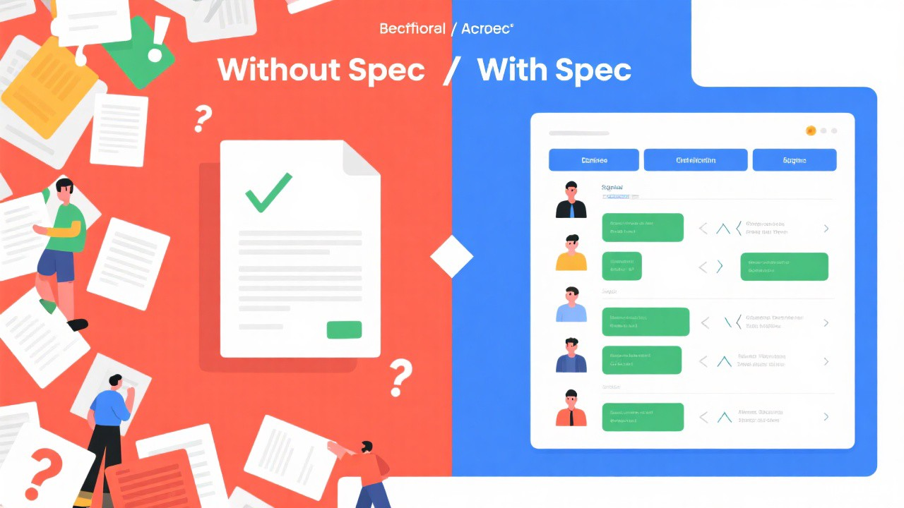
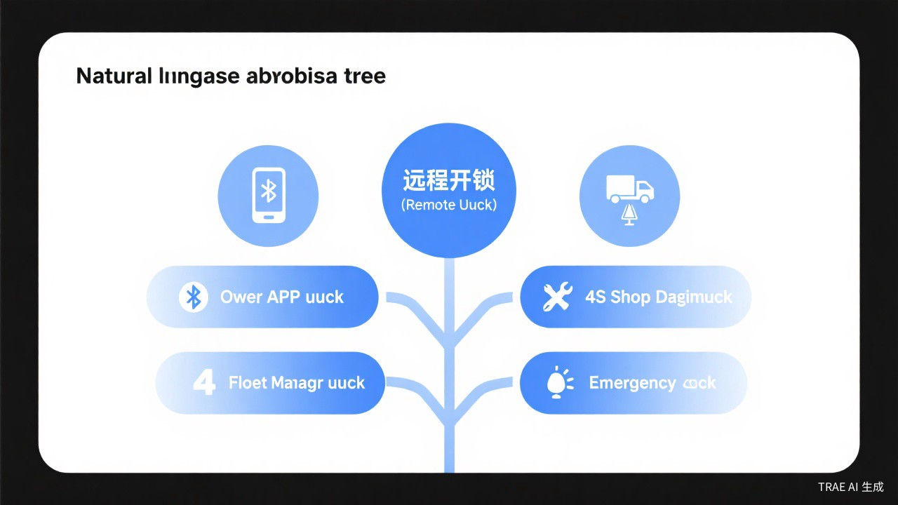
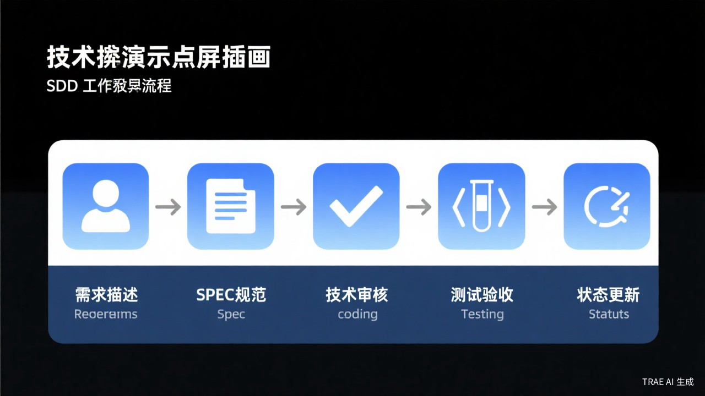

约 30 分钟
在使用 AI 辅助编码时，
你们有没有遇到过 AI "乱说话"的情况？
今天，我们来解决这些问题
"AI 到底是怎么改变我们写代码的方式的？"

| 范式 | 提出时间 | 核心提出者 | 核心特点 | 局限 |
|---|---|---|---|---|
| Tab Coding | 2023年雏形 2025年4月命名 | Cursor / Neon 博客 | 人机协作、AI 预测、Tab 确认 | 单点代码 |
| Vibe Coding | 2025年2月2日 | Andrej Karpathy | 纯自然语言驱动、信任 AI | 无项目理解 |
| Spec Coding | 2025年中命名 思想起源2004年 | 社区对 Vibe Coding 的反思 | 规范先行、文档即代码 | 需前期投入 |
2023 年，Cursor 编辑器推出 Tab 功能。2025 年 4 月 4 日，Neon 博客首次提出 Tab Coding 概念。
定义：通过 Tab 键一键接受 AI 预测代码的编程范式
AI 预测代码，你按 Tab 键一键确认。边写边补、无缝衔接。
人机协作、AI 预测、Tab 确认
# 我只需要写这几行：
def get_user
# AI 自动预测，我按 Tab 确认：
def get_user(user_id: int) -> dict:
"""Get user by ID."""
return db.query(f"SELECT * FROM users WHERE id = {user_id}")AI 是个好助手，但只是个助手。
2025 年 2 月 2 日，Andrej Karpathy（OpenAI 联合创始人）在 X 发文，首次提出 Vibe Coding。
定义：用自然语言描述需求，AI 生成代码，人只把控方向
对话窗口，纯自然语言描述需求。告诉 AI 你要做什么，而不是手动写代码。
纯自然语言驱动、信任 AI、结果导向——能跑就行、跟着感觉走
帮我实现远程车窗控制功能：
1. 支持四门独立升降控制
2. 支持防夹手功能
3. 支持限位停止
4. 状态变化时实时上报云端| 维度 | Tab Coding | Vibe Coding |
|---|---|---|
| 生成粒度 | 单函数 | 功能模块 |
| 理解能力 | 代码前缀 | 自然语言描述 |
| 迭代方式 | 重写 | 对话修改 |
AI 是个聪明的助手，但它不懂你的项目。
2004 年，微软研究院提出 Spec#，将规范（Spec）与代码绑定，奠定"先规范后代码"思想。
2025 年中，在 Vibe Coding 热潮后，社区提出 Spec Coding，作为对"无规范依赖 AI"的反思。
强调：先写规范（Spec.md）、再让 AI 严格实现
不再是"告诉 AI 要做什么"，而是"先让 AI 理解我们要做什么、有什么约束、交付标准是什么"。
需求描述 → 规范文档(Spec) → 技术约束 → 代码实现 → 测试验收规范先行、文档即代码、严格验收——精确可控、可测试、可维护

AI 是个好助手，但只是个助手——它不懂你的项目。

5个开发者 → 5套不同方案 → 集成噩梦
先让 AI 理解"做什么、有什么约束、交付标准是什么"，再让它写代码
从 "告诉 AI 要做什么" 变成 "让 AI 理解我们要做什么"
| 痛点 | Tab Coding | Vibe Coding | Spec Coding 解决方案 |
|---|---|---|---|
| 代码片段无全局视角 | ✗ 无法解决 | △ 部分解决 | 规范文档定义全局约束 |
| 自然语言歧义 | — | ✗ 无法解决 | 功能边界精确定义 |
| 多人协作不一致 | — | ✗ 无法解决 | 统一规范文档，所有人基于同一份文档工作 |
| 测试用例缺失 | ✗ 无 | △ 手动补充 | 规范内置测试用例 |
| 设计决策无记录 | — | ✗ 无 | Spec 记录所有技术约束和决策 |

从"告诉 AI 要做什么"变成"让 AI 理解我们要做什么"
Spec = Specification（规范）
连接人类意图和 AI 实现的桥梁

同一功能描述，在汽车行业可能有完全不同的业务上下文
## 功能边界
### 做什么
- 支持车主APP远程解锁车门（限定距离：无限制）
- 支持蓝牙近场解锁（距离车辆5米内）
- 解锁成功后车辆进入ready状态
### 不做什么
- 不支持4S店远程解锁（需走诊断CAN总线）
- 不支持应急解锁（将由紧急救援模块处理）
### 权限约束
- 仅车主持有解锁权限
- 解锁记录需同步至云端最糟糕的情况：产品提了一个需求，5个开发人员各自开发，集成时发现——
Spec作为唯一的真实来源，所有人基于同一份文档工作。
## CAN信号定义（空调控制）
### 空调控制信号：AC_CTRL_0x123
| 信号名 | 字节位置 | 位定义 | 值范围 | 说明 |
|----------|----------|---------|--------|-------------|
| ac_power | 0[0] | 1bit | 0/1 | 空调电源状态 |
| ac_mode | 0[1-3] | 3bit | 0-4 | 0:关闭 1:制冷 2:制热 3:自动 4:除雾 |
| ac_temp | 1[0-7] | 8bit | 16-30 | 目标温度(℃) |
| fan_speed| 2[0-5] | 6bit | 0-7 | 风扇转速等级 |AI生成的代码，在 Vibe Coding 阶段只能手动写测试用例。但汽车行业的测试不是那么简单：
Spec内置测试用例，AI生成代码后自动运行验收。
## 测试用例
| 用例编号 | 用例名称 | 测试类型 |
|----------|----------------------|-----------|
| MT001 | 远程解锁命令下发成功 | HIL自动化 |
| MT002 | 信号超时（500ms无响应） | HIL自动化 |
| MT003 | 车内CAN总线故障时安全策略 | 人工测试 |
| ... | ... | ... |半年后，这些问题出现了：
Spec文档记录了：
新人可以通过阅读Spec快速理解TBox的功能架构，而不是去读那几千行没有注释的C代码。
回答一个问题：这个功能做什么、不做什么？
## 功能边界
### 核心功能
1. 车主APP远程解锁车门
2. 蓝牙近场解锁（距离车辆5米内）
3. 解锁成功后整车进入ready状态
### 边界情况处理
- 车辆处于碰撞报警状态时，拒绝解锁
- 网络信号弱时，解锁请求超时时间延长至3秒
### 不包含的功能
- 4S店诊断模式解锁
- 营运车队强制调度解锁回答问题：用什么协议、有什么通信要求、安全策略？
## 技术约束
### 通信协议
- TBox与云平台：MQTT over TLS 1.2
- TBox与车载CAN：HS-CAN 500kbps（符合ISO 11898）
### CAN信号定义
- 车门状态信号：DOOR_STATUS_0x101（周期100ms）
- 解锁命令信号：DOOR_UNLOCK_0x102（事件触发）
### 安全约束
- 命令使用AES-256加密
- 解锁记录完整上云，不可篡改
### 实时性要求
- 云端命令下发到CAN信号输出：<500ms回答问题：怎么算做完了？
## 验收标准
### 功能验收
- [ ] 车主APP可远程解锁车门
- [ ] 解锁命令成功触达CAN总线
- [ ] 云端日志记录完整
### 行业标准要求
- [ ] 符合GB/T 32960（新能源汽车远程服务与管理）
- [ ] 通过EMC测试（电磁兼容性）
### 性能要求
- 云端到CAN信号输出延迟：<500ms
- 支持100并发解锁请求回答问题：这个功能现在在什么阶段？
## 状态
| 状态 | 值 |
|------------|--------|
| 当前状态 | 开发中 |
| 创建时间 | 2024-06-01 |
| 最后更新 | 2024-06-15 |
| 阻塞问题 | 无 |
用户用自然语言描述需求
AI提取功能边界和技术约束，生成规范文档
技术负责人审核确认CAN信号定义等
AI按照规范文档生成代码，不会擅自决定CAN信号ID
运行规范文档中内置的测试用例验证
更新规范文档中的状态字段
| 我们之前提到的问题 | 解决方案 |
|---|---|
| 自然语言歧义性 | Spec 精确定义功能边界，消除歧义 |
| 多人认知不一致 | 统一规范文档，所有人基于同一份文档工作 |
| 测试用例缺失 | Spec 内置验收测试用例 |
| 技术债务累积 | Spec 记录技术约束，新功能必须遵循 |
| 流程不透明 | 状态机追踪，每个阶段清晰可见 |
| 代码不一致 | AI 严格按规范生成，强制一致性 |
| 范式 | 提出时间 | 核心提出者 | 核心特点 | 局限 |
|---|---|---|---|---|
| Tab Coding | 2023年雏形 2025年4月命名 | Cursor / Neon 博客 | 人机协作、AI 预测、Tab 确认 | 单点代码 |
| Vibe Coding | 2025年2月2日 | Andrej Karpathy | 纯自然语言驱动、信任 AI | 无项目理解 |
| Spec Coding | 2025年中命名 思想起源2004年 | 社区对 Vibe Coding 的反思 | 规范先行、文档即代码 | 需前期投入 |
今天的分享是理论篇，我们了解了 Spec Coding 的理念和原理。
下节课是实战篇——我们将一起：
如果你今天听完觉得"这个方法听起来不错"，
那么下节课我会让你亲手体验到"这个方法真的好用"。
下次遇到AI生成代码不符合预期时，
先问自己：我有没有给它一份清晰的Spec？
谢谢大家！
az-sdd.v3/README.mdaz-sdd.v3/az-sdd-rules/SDD规则.mdaz-sdd.v3/az-sdd-spec/references/spec.template.md期待在实战篇与你再见！